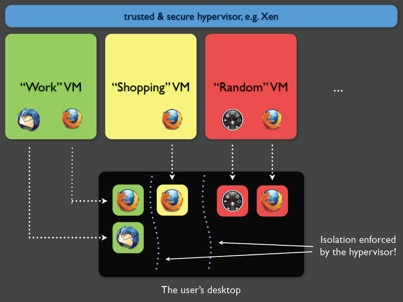
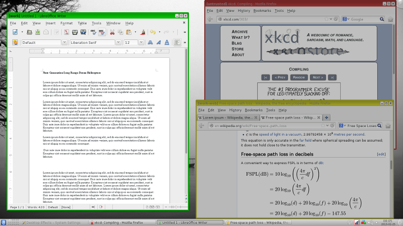
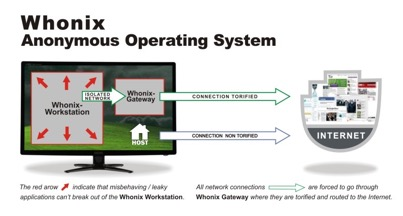
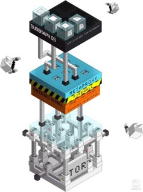

All'inizio di questo corso abbiamo messo in guardia l'utente sulla reale sicurezza
che una Virtual Machine può fornire: questa problematica è ancora vera ma
credo sia arrivato il momento anche di fare analisi più approfondite.
La virtualizzazione non e un male quando si parla di sicurezza informatica anzi può
garantire una certa "tenuta stagna" ad smpio se stai studiando i comportamenti di un malware,è
fondamentale la virtualizzazione.
Con il discorso delle vulnerabilità abbiamo evidenziato come l'anonimato di una
persona può essere compromessa violando il sistema che sta utilizzando: cos' è
possibile fare allora?
Il progetto Qubes OS nasce il 3 settembre 2012 ad opera di una ricercatrice informatica,
Joanna Rutkowska. Questo particolare OS introduce un nuovo approccio di sicurezza definito
di "isolamento". In sostanza si pressume che ogni programma puo avere bug e quindi se sfruttato
può causare danni al sistema.
Qubes OS + Whonix di creare stanze di lavoro ben divisi tra di loro cosi da
permettere interazioni tra i diversi tool dello stesso dominio (chiamati Qubes).
Per spiegare meglio il concetto utilizzeremo un'infografica dello sviluppatore:

Nell'esempio qui mostrato, sono presenti tre ambienti virtualizzati: Work,
Shopping e Random.
Qubes OS + Whonix
In tutti e tre gli ambienti è presente un processo di Firefox: questo viene
considerato come un processo a se stante, cioè se noi fossimo loggati in
un qualsiasi sito di e-Commerce (Amazon,Ebay etc...) non lo saremmo pero in Work,
e in Random garantendoci un'isolamento totale.
Molti di voi staranno pensando era neccessario creare un O.S non bastava una Virtual Machine?
Certo però bisogna far partire tre O.S differenti e qusto avrebbe consumato partecchie
risorse hardware.
L'hypervisor integrato in Qubes permette di creare infinite qubes utilizzando un
unico Sistema Operativo e può supportare nativamente Fedora, Debian, Windows
e Whonix; inoltre, gli ambienti di lavoro condividono lo stesso ambiente grafico,
eliminando all'user lo stressante switch tra i vari Sistemi Operativi.
Avrai inoltre notato che i tre ambienti di lavoro sono divisi per colore. Ora guarda
attentamente la prossima screen:

Come puoi notare ogni laoro a un suo colore e inoltre solo quella a cui stai lavorando
e illuminata le altre sono più scure.
Come abbiamo avuto modo di vedere, il Network è l'ambiente più pericoloso per
l'utente che vuole proteggere il proprio anonimato.
Qubes OS offre al suo interno un sistema di virtualizzazione chiamato Network
Domain: in buona sostanza il concetto di VM viene applicato anche alla rete che
viene virtualizzata in un ambiente controllato da uno pseudo-user senza privilegi
di root e isolato dal resto del Sistema Operativo.
Impratica è come se tutte le operazioni di networking venisse gestito da un altra
VM questo garantisce un livello di sicurezza senza confronti.
Lo stesso concetto viene applicato anche alla memorizzazione dati, qui definita
Storage Domain: tutti gli ambienti di lavoro devono ovviamente avere il loro
spazio su disco per memorizzare software, dati e via dicendo.
Tutte le pseudo-partizioni condividono lo stesso fyle-system in modalità read-
mode only.
Partiamo sempre dal concetto che ogni soluzione è soggettiva: chi
preferisce Tails probabilmente cerca una situazione totalmente estranea al suo
modo di interpretare l'informatica.
Tails OS, così come molte altre distribuzioni Live, è pensata per operazioni mordi
e fuggi che non sempre si sposano adeguatamente con il tipo di attività che si fa.
Un utente con una certa esperienza nel campo di GNU/Linux vorrebbe avere la
sicurezza che Tails offre ma senza dover ogni volta l'obbligo di riavviare il tutto.
Qubes OS riesce a fare questo, garantisce ambienti di lavoro isolati tra di loro e
nello stesso tempo offre la comodità di un Sistema Operativo standalone.
E con questo fatte le vostre considerazione e scegliete quella che per voi e meglio.
Tirando le somme entrambi i Sistemi Operativi sono importanti per i loro scopi:
Tails è sconsigliato usarlo su VM anche gli svillupatori spiegano:
il più importante tra questi è la persistenza o
meglio la reminiscenza dei dati dal Sistema Operativo che rimangono in
memoria all'interno del disco.
Come abbiamo avuto modo di vedere Qubes usa un modo di paravirtualizazzione che
auto-distrugge tutti i dati in memoria, facilitando così le operazioni di bonifica del drive.
Qubes quindi e adatto alla paravisrtualizazzione diu Tails il procedimento per
l'applicazione è relativamente semplice. In questo modo è possibile
far uso della “potenza di fuoco” di Qubes OS assieme a Tails OS: come si dice in
questi casi, due piccioni con una fava!
L'utilizzo di Tails in Qubes ci ha permesso di comprendere la virtualizzazione di un
intero Sistema Operativo all'interno di un sistema paravirtualizzato Xen,ciò
tuttavia può essere considerato un limite.Questo è vero nel momento in cui si
vogliano utilizzare i tools in Qubes anzichè quelli virtualizzati in Tails.
È necessario allora creare un nuovo livello che ci permetta di veicolare il traffico in un canale
di comunicazione sicuro e anonimo.
Whonix è una distribuzione GNU/Linux basata su Debian e Tor e fa uso di due
VM, un gateway e una workstation.
Per capirne il suo funzionamento faremo uso di un'altra infografica dello sviluppatore:

Come vediamo, la Workstation è un ambiente che ci permette di lavorare
all'interno di un'area isolata dal Gateway, una Virtual Machine che è già pensata
per il collegamento via Tor.
Fatta questa premessa è doveroso ricordare che Whonix ha gli stessi limiti di
sicurezza che abbiamo affrontato nel capitolo “Tor”.
Questa differenza si paga con l'assenza di alcune peculiarità che rendono Tails
talvolta vantaggiosa come:
Possiamo definire Subgraph OS come il nuovo sistema di sicurezza anche se però
e solo in versione alfa maneggiatelo con cura e discrezione.
Gli svillupatori dichiarono che Subgraph sia un O.S rivoluzionario può
essere installato su qualsiasi PC anche abbastanza datato.
Di seguito mettero la foto per spiegarvi la struttura

Subgraph OS viene distribuito di default con un kernel già compilato di
Grsecurity, una serie di patch che garantiscono un alto livello di sicurezza
all'intero sistema.
All'interno di Grsecurity troviamo PaX, un componente molto potente in grado
rilevare qualsiasi attacco come ad esempio buffer overflow, grazie ad una
nuova tecnlogia riesce a randomizzare i banchi di memoria rendendo difficoltoso
recuperarli.
Subgraph OS inoltre riprende il metodo di virtualizzazione: lo scopo e quello di
Sandboxare la applicazioni per fare in modo di isolarle tra di loro.
Quindi nel caso un applicazione venisse exploitate questa non metterebbe a rischio
l'intero PC.Tutto ciò e garantito da OZ, un framework pensato solamente
per Subgraph OS.
Subgraph supporta la criptazione del filesystem rendendolo persino obbligatoria.
+
La maggior parte dei tools di Subgraph sono ad alto livello cosi da non poter essere
vittima di attacchi di memoria. Inoltre molti tool sono stati eliminati e altri addiritura
riscritti da zero(ad esempio il client di posta).
Sempre sulla falsa riga di Qubes, troviamo un dominio di networking: in questo
caso si chiama Subgraph Metaproxy affiancato da un Firewall Software.
Mentre il Firewall, consente solo alle applicazioni consentite di collegarsi
a un Metaproxy,quest'ultimo è configurato a smistare le connessione
su ogni relay TOR, dimunuendo cosi informazioni comuni sulla rete.Per essere più
chiari se noi stessimo inviando una e-mail,comporteremo l'uso di due diversi
relay Tor.
Il firewall può essere configurato per accettare
temporaneamente o perennemente l'accesso alla rete da parte di qualunque software,
scardinando cosi la possibiltà che una backdoor si prenda possesso del nostro
Sistema operativo, a patto che la backdoor non sia gia presente in qualche applicazione
whitelistata.
Il whitelisting di un'app avviene sia per nome dell'applicazione che per indirizzo
di destinazione; nel caso in cui un'applicazione volesse collegarsi senza essere in
whitelist, il Firewall semplicemente si occuperà di killare la connessione.
Come penso abbiate gia capito Subgraph fa uso delle rete Tor per comunicare con il
mondo esterno,ad essere precisi, fa un uso esclusivo della rete Tor, tranne quando è
necessaria una connessione diretta col portale(tipo per collegarti ad una Wi-Fi pubblica).
Subgraph OS inoltre fornisce al suo interno due software custom per la
sicurezza nelle comunicazioni: